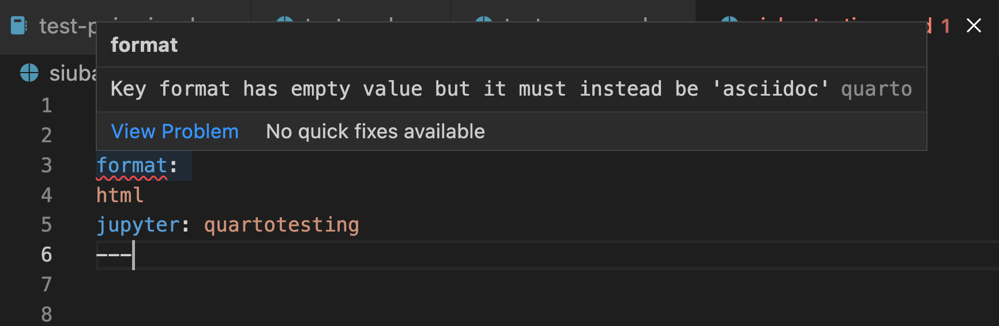
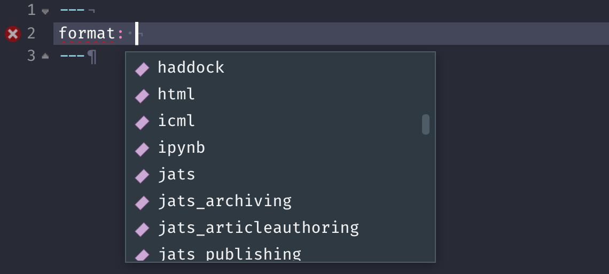
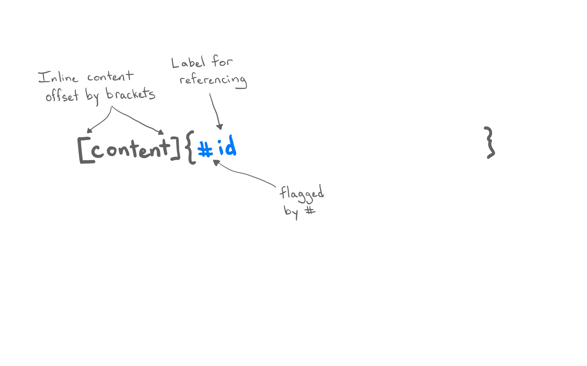
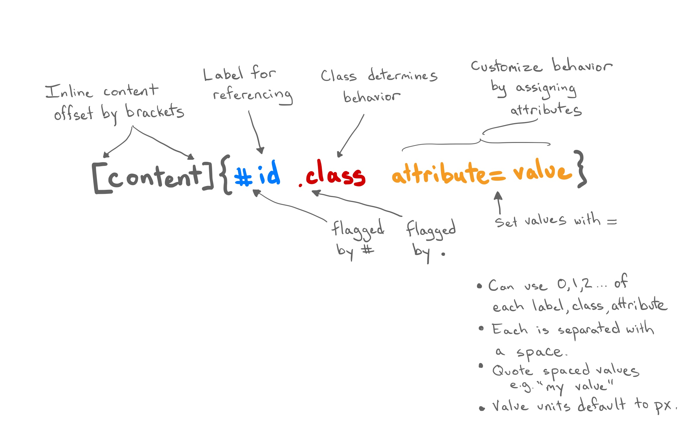

05:00
Documents
From R Markdown to Quarto
Where does the name “Quarto” come from?
. . .
Anatomy of a Quarto document
Components
Metadata: YAML
Text: Markdown
Code: Executed via
knitrorjupyter
. . .
Weave it all together, and you have beautiful, powerful, and useful outputs!
Literate programming
Literate programming is writing out the program logic in a human language with included code snippets (separated by a primitive markup) and macros.
---
title: "ggplot2 demo"
date: "5/19/2023"
format: html
---
## MPG
There is a relationship between city and highway mileage.
```{r}
#| label: fig-mpg
library(ggplot2)
ggplot(mpg, aes(x = cty, y = hwy)) +
geom_point() +
geom_smooth(method = "loess")
```Metadata
YAML
“Yet Another Markup Language” or “YAML Ain’t Markup Language” is used to provide document level metadata …
. . .
… in key-value pairs,
. . .
… that can nest,
. . .
… are fussy about indentation,
. . .
… and are kept between ---.
---
key: value
---Example: Output options
---
format: something
---. . .
---
format: html
------
format: pdf
------
format: revealjs
---Example: Indented nesting
Indentation matters!
---
format:
html:
toc: true
code-fold: true
---Fussing with YAML (invalid)
- Invalid: No space after
:
---
format:html
---- Invalid: Read as missing
---
format:
html
---- Valid, but needs next object
---
format:
html:
---Fussing with YAML (valid)
There are multiple ways of formatting valid YAML:
- Valid: There’s a space after
:
format: html- Valid: There are 2 spaces a new line and no trailing
:
format:
html- Valid:
format: htmlwith additional options made with proper indentation
format:
html:
toc: trueWhy YAML?
To avoid manually typing out all the options, every time when rendering via the CLI:
. . .
quarto render document.qmd --to html. . .
quarto render document.qmd --to html -M code-fold:true. . .
quarto render document.qmd --to html -M code-fold:true -P alpha:0.2 -P ratio:0.3Quarto linting
Lint, or a linter, is a static code analysis tool used to flag programming errors, bugs, stylistic errors and suspicious constructs.


Quarto YAML Intelligence
RStudio + VSCode provide rich tab-completion - start a word and tab to complete, or Ctrl + space to see all available options.

Your turn
- Open
hello-penguins.qmdin RStudio. - Try
Ctrl + spaceto see the available YAML options. - Try out the tab-completion of any options that sound interesting.
- You can use the HTML reference as needed.
List of valid YAML fields
Many YAML fields are common across various outputs
But also each output type has its own set of valid YAML fields and options
Definitive list: quarto.org/docs/reference/formats/html
Text
Text Formatting
| Markdown Syntax | Output |
|---|---|
|
italics and bold |
|
superscript2 / subscript2 |
|
|
|
verbatim code |
Headings
| Markdown Syntax | Output |
|---|---|
|
Header 1 |
|
Header 2 |
|
Header 3 |
|
Header 4 |
|
Header 5 |
|
Header 6 |
Links
There are several types of “links” or hyperlinks.
Markdown
You can embed [named hyperlinks](https://quarto.org/),
direct urls like <https://quarto.org/>, and links to
[other places](#quarto-anatomy) in
the document. The syntax is similar for embedding an
inline image: .Output
You can embed named hyperlinks, direct urls like https://quarto.org/, and links to other places in the document. The syntax is similar for embedding an inline image:  .
.
Markdown figures

Markdown figures with options
{fig-align="left" width=250}
{fig-align="right" width=250 fig-alt="Illustration of two penguins playing with a Quarto ball."}
Lists
Unordered list:
Markdown:
- unordered list
- sub-item 1
- sub-item 1
- sub-sub-item 1 Output
- unordered list
- sub-item 1
- sub-item 1
- sub-sub-item 1
- sub-item 1
Ordered list:
Markdown:
1. ordered list
2. item 2
i. sub-item 1
A. sub-sub-item 1Output
- ordered list
- item 2
- sub-item 1
- sub-sub-item 1
- sub-item 1
Quotes
Markdown:
> Let us change our traditional attitude to the construction of programs: Instead of imagining that our main task is to instruct a computer what to do, let us concentrate rather on explaining to human beings what we want a computer to do.
> - Donald Knuth, Literate Programming. . .
Output:
Let us change our traditional attitude to the construction of programs: Instead of imagining that our main task is to instruct a computer what to do, let us concentrate rather on explaining to human beings what we want a computer to do. - Donald Knuth, Literate Programming
“Literate Programming”, The Computer Journal 27 (1984), p. 97. (Reprinted in Literate Programming, 1992, p. 99.) Literate Programming (1984)
Your turn
- Open
markdown-syntax.qmdin RStudio. - Follow the instructions in the document for how to modify it.
05:00
Tables
Markdown tables
Markdown:
| Right | Left | Default | Center |
|------:|:-----|---------|:------:|
| 12 | 12 | 12 | 12 |
| 123 | 123 | 123 | 123 |
| 1 | 1 | 1 | 1 |. . .
Output:
| Right | Left | Default | Center |
|---|---|---|---|
| 12 | 12 | 12 | 12 |
| 123 | 123 | 123 | 123 |
| 1 | 1 | 1 | 1 |
Grid tables
Markdown:
+---------------+---------------+--------------------+
| Fruit | Price | Advantages |
+===============+===============+====================+
| Bananas | $1.34 | - built-in wrapper |
| | | - bright color |
+---------------+---------------+--------------------+
| Oranges | $2.10 | - cures scurvy |
| | | - tasty |
+---------------+---------------+--------------------+
: Sample grid table.Grid tables
Output:
| Fruit | Price | Advantages |
|---|---|---|
| Bananas | $1.34 |
|
| Oranges | $2.10 |
|
Grid tables: Alignment
- Alignments can be specified as with pipe tables, by putting colons at the boundaries of the separator line after the header:
+---------------+---------------+--------------------+
| Right | Left | Centered |
+==============:+:==============+:==================:+
| Bananas | $1.34 | built-in wrapper |
+---------------+---------------+--------------------+. . .
- For headerless tables, the colons go on the top line instead:
+--------------:+:--------------+:------------------:+
| Right | Left | Centered |
+---------------+---------------+--------------------+Tables from code
The knitr package can turn data frames into tables with knitr::kable():
library(knitr)
library(palmerpenguins)Warning: package 'palmerpenguins' was built under R version
4.2.3head(penguins) |>
kable()| species | island | bill_length_mm | bill_depth_mm | flipper_length_mm | body_mass_g | sex | year |
|---|---|---|---|---|---|---|---|
| Adelie | Torgersen | 39.1 | 18.7 | 181 | 3750 | male | 2007 |
| Adelie | Torgersen | 39.5 | 17.4 | 186 | 3800 | female | 2007 |
| Adelie | Torgersen | 40.3 | 18.0 | 195 | 3250 | female | 2007 |
| Adelie | Torgersen | NA | NA | NA | NA | NA | 2007 |
| Adelie | Torgersen | 36.7 | 19.3 | 193 | 3450 | female | 2007 |
| Adelie | Torgersen | 39.3 | 20.6 | 190 | 3650 | male | 2007 |
Tables from code
If you want fancier tables, try the gt package and all that it offers!
library(gt)
head(penguins) |>
gt() |>
tab_style(
style = list(
cell_fill(color = "pink"),
cell_text(style = "italic")
),
locations = cells_body(
columns = bill_length_mm,
rows = bill_length_mm > 40
)
)| species | island | bill_length_mm | bill_depth_mm | flipper_length_mm | body_mass_g | sex | year |
|---|---|---|---|---|---|---|---|
| Adelie | Torgersen | 39.1 | 18.7 | 181 | 3750 | male | 2007 |
| Adelie | Torgersen | 39.5 | 17.4 | 186 | 3800 | female | 2007 |
| Adelie | Torgersen | 40.3 | 18.0 | 195 | 3250 | female | 2007 |
| Adelie | Torgersen | NA | NA | NA | NA | NA | 2007 |
| Adelie | Torgersen | 36.7 | 19.3 | 193 | 3450 | female | 2007 |
| Adelie | Torgersen | 39.3 | 20.6 | 190 | 3650 | male | 2007 |
Cross references
Cross references
Help readers to navigate your document with numbered references and hyperlinks to entities like figures and tables.
Cross referencing steps:
- Add a caption to your figure or table.
- Give an id to your figure or table, starting with
fig-ortbl-. - Refer to it with
@fig-...or@tbl-....
Figure cross references
The presence of the caption (Blue penguin) and label (#fig-blue-penguin) make this figure referenceable:
Markdown:
See @fig-blue-penguin for a cute blue penguin.
{#fig-blue-penguin}
Table cross references (from code)
The presence of the caption (A few penguins) and label (#tbl-penguins) make this table referenceable:
Markdown:
See @tbl-penguins for data on a few penguins.
```{r}
#| label: tbl-penguins
#| tbl-cap: A few penguins
head(penguins) |>
gt()
```Output:
See Table 1 for data on a few penguins.
head(penguins) |>
gt()| species | island | bill_length_mm | bill_depth_mm | flipper_length_mm | body_mass_g | sex | year |
|---|---|---|---|---|---|---|---|
| Adelie | Torgersen | 39.1 | 18.7 | 181 | 3750 | male | 2007 |
| Adelie | Torgersen | 39.5 | 17.4 | 186 | 3800 | female | 2007 |
| Adelie | Torgersen | 40.3 | 18.0 | 195 | 3250 | female | 2007 |
| Adelie | Torgersen | NA | NA | NA | NA | NA | 2007 |
| Adelie | Torgersen | 36.7 | 19.3 | 193 | 3450 | female | 2007 |
| Adelie | Torgersen | 39.3 | 20.6 | 190 | 3650 | male | 2007 |
Table cross references (from markdown)
The presence of the caption (A few penguins) and label (#tbl-penguins) make this table referenceable:
Markdown:
See @tbl-numbers for data on a few penguins.
| Right | Left |
|------:|:-----|
| 12 | 12 |
| 123 | 123 |
: An array of numbers {#tbl-numbers}Output:
See Table 2 for data on a few penguins.
| Right | Left |
|---|---|
| 12 | 12 |
| 123 | 123 |
Your turn
- Open
tables-figures.qmd. - Follow the instructions in the document.
- Exchange one new thing you’ve learned with your neighbor.
08:00
Quarto Elements
What you’re about to see . . .
- Extends the type of elements you can add to a doc
- Will work across the main output formats (html, pdf, docx, pptx)
Ingredients
Fenced Div and Bracketed Span
The Bracketed Span
The Bracketed Span
The Bracketed Span

The Bracketed Span
The Bracketed Span
The Bracketed Span

The Fenced Div
Example: Callout Blocks
Use case: highlight content for the reader in multiple formats.
Markdown
:::{.callout-note}
Look - a squirrel!
:::
:::{.callout-important}
Look - a squirrel!
:::
:::{.callout-tip}
Look - a squirrel!
:::HTML output
Note
Look - a squirrel!
Important
Look - a squirrel!
Tip
Look - a squirrel!
Callout Blocks
Highlight content for the reader in multiple formats.
Markdown
:::{.callout-note}
Look - a squirrel!
:::
:::{.callout-important}
Look - a squirrel!
:::
:::{.callout-tip}
Look - a squirrel!
:::pdf output
Callout Blocks
Highlight content for the reader in multiple formats.
Markdown
:::{.callout-note}
Look - a squirrel!
:::
:::{.callout-important}
Look - a squirrel!
:::
:::{.callout-tip}
Look - a squirrel!
:::docx output
Your turn
- Open
callout-boxes.qmdand render the document. - Change the type of the first callout box and then re-render. Also try adding attributes inside
{ }to learn what they do.icon=trueoricon=false.appearance="simple"(can also try"minimal"and"default").
- Make the second callout box collapsible.
- Change the format to PDF and re-render.
05:00
Code
R Markdown’s Code Chunk
```{r, echo=FALSE}
rnorm(3)
```. . .
What syntax is being used in echo=FALSE?
- HTML
- Pandoc attribute syntax
- YAML
- CSS
- R
Generalizing the Code Chunk
How can this be generalized to other languages?
```{r, echo=FALSE}
rnorm(3)
```Generalizing the Code Chunk
How can this be generalized to other languages?
```{language, echo=FALSE}
code
```- Executable code flagged by
{} - Support R, Python, Julia
- Also support
mermaidanddotdiagram languages.
Generalizing the Code Chunk
How can this be generalized to other languages?
The Perks of the Hashpipe #|
- Line breaks prevent chunk options that go on
{r, and=on, and=on, and=on, and=on, and=on, and=on}
- Chunk options are now pan-language with
<commentchar>|.
```{python}
#| echo: false
``````{mermaid}
%%| echo: false
```- No more yelling! (
eval=FALSE)
Execution Options
Control how the code is executed with options.
| Option | Description |
|---|---|
eval |
Evaluate the code chunk (if false, just echos the code into the output). |
echo |
Include the source code in output |
output |
Include the results of executing the code in the output (true, false, or asis to indicate that the output is raw markdown and should not have any of Quarto’s standard enclosing markdown). |
warning |
Include warnings in the output. |
error |
Include errors in the output. |
include |
Catch all for preventing any output (code or results) from being included (e.g. include: false suppresses all output from the code block). |
Don’t forget to use cmd-space to see the available options!
From Cell Option to YAML
From Cell Option to YAML
From Cell Option to YAML
Options can be moved into YAML under the
executekey to apply to all chunks. Exceptions to that option can be set cell-by-cell.You can also pass options via YAML to knitr through the
knitrkey3.
From Cell Option to YAML
Options can be moved into YAML under the
executekey to apply to all chunks. Exceptions to that option can be set cell-by-cell.You can also pass options via YAML to knitr through the
knitrkey4.You can use knitr to pass options that control your R session.
Example: Figures from Code
```{r}
library(palmerpenguins)
library(ggplot2)
ggplot(penguins, aes(x = bill_length_mm,
y = bill_depth_mm,
col = island)) +
geom_point()
```Warning: package 'ggplot2' was built under R version 4.2.3Warning: Removed 2 rows containing missing values or values outside the
scale range (`geom_point()`).Example: Figures from Code
```{r}
#| fig-width: 5
#| fig-height: 3
library(palmerpenguins)
library(ggplot2)
ggplot(penguins, aes(x = bill_length_mm,
y = bill_depth_mm,
col = island)) +
geom_point()
```Warning: Removed 2 rows containing missing values or values outside the
scale range (`geom_point()`).
Example: Figures from Code
```{r}
#| fig-width: 5
#| fig-height: 3
#| fig-cap: Size of penguins on three islands in the Palmer Archipelago.
#| fig-alt: Scatterplot showing the bill sizes of penguins across three islands.
library(palmerpenguins)
library(ggplot2)
ggplot(penguins, aes(x = bill_length_mm,
y = bill_depth_mm,
col = island)) +
geom_point()
```Warning: Removed 2 rows containing missing values or values outside the
scale range (`geom_point()`).. . .
Save time/code by moving figure sizing defaults up to the YAML.
Your turn
- Open
code-cells.qmdand render the document. - Add
echo: falseto the code cell and re-render. - Add more cell options by using Ctrl + Space after the
#|or consult the Quarto Reference. - Add a second code cell (you can copy + paste the first), move your cell options to the YAML, and re-render.
07:00